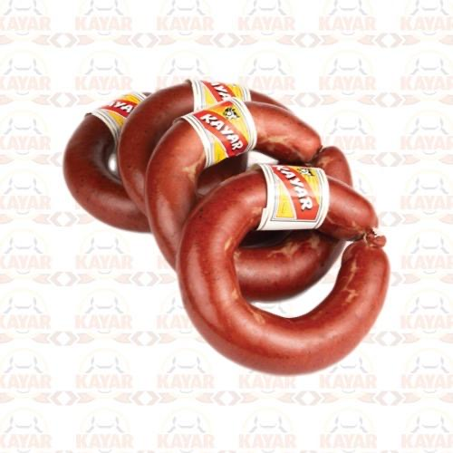
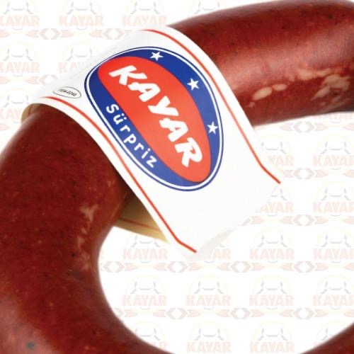
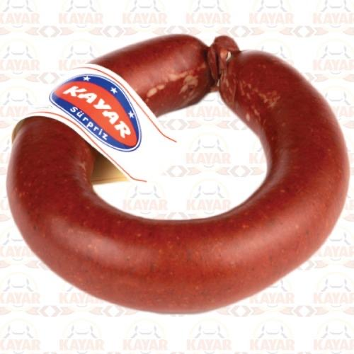

Neden şimdi?
Ramazan 8 Şubat'ta başlıyor
Sucuk için yılın en güçlü iki haftası: 1–15 Şubat 2027.
Ramazan alışverişi. Mesaj: "Ramazan sofranız Kayar'la hazır."
İlk sahur gecesi. Market ve pazarlar en kalabalık gün.
Ramazan'ın ilk haftası. Mesaj: sahur ve iftar sofrası.
Tek fikir, her yerde
"Sahurun sesi:
Kayar"
Tavada cızırdayan sucuğun sesi ve görüntüsü. Ambalajda, afişte, telefonda, sokakta hep aynı fikir.
Diğer seçenekler: "Ramazan sofrasının Sakaryalısı" · "İftarda da sahurda da Kayar"

1 · Ambalaj
İşe ambalajdan başlıyoruz
Reklamı gören kişi rafta ürünü hemen tanımalı.

Bugünkü etiket

Kuşak taslağı
- Ramazan boyunca ürünün üstüne özel kuşak (bant)
- Ürün adı uzaktan okunacak kadar büyük
- "1985'ten beri Adapazarı" mührü her pakette
- Kuşakta kare kod (QR): okutan, çekilişe ve tariflere ulaşır
- Logo aynı kalır, yalnızca daha temiz çizilir
2 · Ne yapacağız?
Sakarya'nın her köşesinde Kayar
Markette
600'e yakın satış noktasında afiş, raf etiketi ve stand. Milkan, Mopaş, Şenmar, Karaul, Kraas, Sakmar, Esmer, Özpaş, Geltat.
Telefonda
Instagram ve Facebook'ta yalnızca Sakarya'ya reklam. Sahur tarifi videoları, gece sahur saatinde daha sık.
Sokakta
Ekranlı araç çarşı, pazar, market otoparkı ve Cuma çıkışlarında. Serdivan AVM karşısında büyük ekran.
Tadım günü
7 Şubat akşamı, ilk sahurdan önce bir market önünde tadım standı. Ramazan sahur paketi.
Çekiliş
Afişteki ve kuşaktaki kare kodu okut, takip et, 30 gün sucuk kazan. Yasal izinleri alınarak.
İnternette
Sitede ürünler bugün "Tükendi" görünüyor; düzeltilir. "Nereden alınır?" haritası ve Google Haritalar kaydı.
Güven mesajı
Haziran 2026'da isim benzerliği yüzünden başka bir firmayla karıştırıldınız. Kampanyanın her yerinde aynı imza: Kayar Sucukları · 1985 · Eski Sakarya Köprüsü yanı. Böylece karışıklık biter.
3 · Takvim
15 Aralık'a kadar yer ayırtılmalı
Ramazan öncesi araç ve ekranlar erken doluyor.
- KasımOnay ve fiyatların toplanması
- 1–15 AralıkAraç ve ekran yer ayırtma, sözleşmeler
- Aralık – OcakVideo çekimi, ambalaj kuşağı, afiş baskısı
- 25–31 OcakAfişler marketlere, reklam hesabı kurulur
- 1–15 ŞubatKampanya yayında
- 16–20 ŞubatSonuç raporu, devam kararı
4 · Hedef
Sonucu sayıyla görürsünüz
geçen yılın aynı dönemine göre satış
Sakaryalıya telefondan ulaşmak
kare kod okutma
Bunlar hedeftir, söz değildir. Araç firmasından günlük rota raporu, ekran firmasından yayın fotoğrafı istenir.
5 · Sizden istediklerimiz
Başlamak için 5 bilgi
- Satış noktası listesi güncel mi? Ürün her markette rafta olacak mı?
- Ramazan'a özel paket veya indirim yapılabilir mi?
- Asıl hedef: daha çok satış mı, yeni market mi?
- Reklam için ayrılabilecek en fazla bütçe
- Logo ve etiketin baskı dosyaları